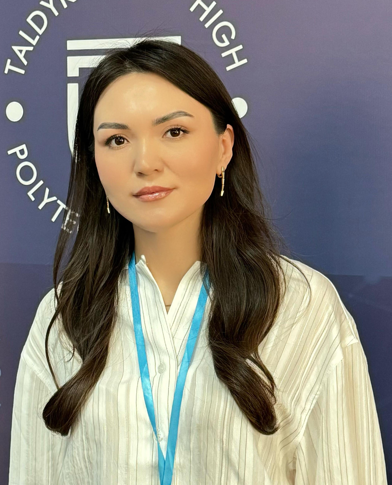

|  | Жумашева Толкын Дулаткызы |
| Лауазымы | Кафедра меңгерушісі, Арнайы пәндер оқытушысы |
|---|---|
| Бітірген оқу орны | Л.Н.Гумилев атындағы Еуразия Ұлттық университеті І.Жансүгіров атындағы Жетісу мемлекеттік университеті |
| Диплом бойынша білімі | Жоғары, мамандығы: Радиотехника, электроника және телекоммуникациялар 2009–2013 жж. «Информатика» мамандығы бойынша білім магистрі 2016–2017 жж. |
| Ғылыми дәрежесі, ғылыми атағы | «Информатика» мамандығы бойынша білім магистрі |
| Біліктілігі және еңбек өтілі | Педагог-модератор, 10 жыл 6 ай |
| Оқытатын модульдер | Радиоэлектрондық құрылғыларды монтаждау, конструирование аппаратного обеспечения прототипа, выполнение монтажа и наладки устройств, блоков и приборов электронной техники |
| Байланыс ақпараты | Nazartolkyn09@gmail.com |
| Қосымша ақпараттар | Жетісу облысы, WorldSkills Kazakhstan, Электроника құзыреттілігі бойынша эксперт-компатриот |